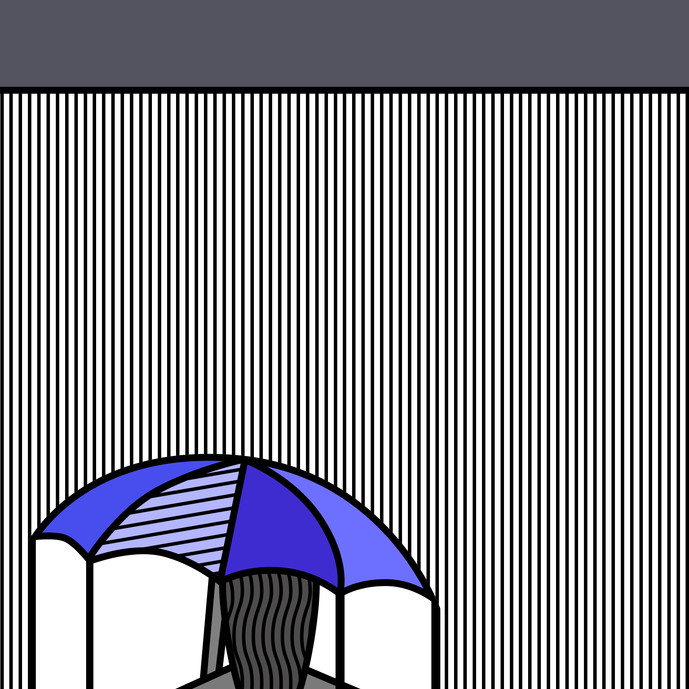

Day 16 - Take Cover
Today I practiced with patterns.
When I was creating the background/rain, I was creating and moving each vertical line one by one. The worst part was to make sure that it was the same number of pixels between each line. 20 minutes in and having only 10 lines finished, I thought to myself: "There must be an easier way to do this." So I started researching all the different buttons on Sketch, then I bumped into Distribute Horizontally and Vertically. Thank goodness for that encounter. It saved me so much more time.
I also played around with shades and colour today. For this design, I think I like it simple.